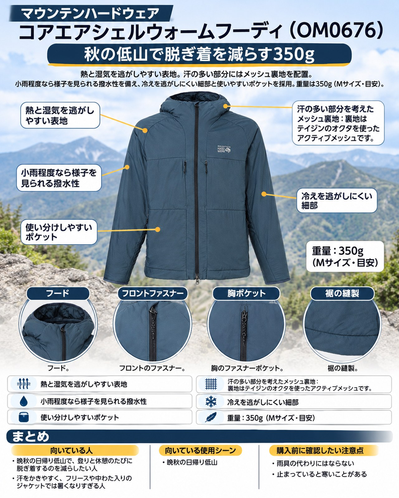

晩秋の低山は、朝の登山口では冷え込み、登り始めると汗ばみ、山頂で休むとまた冷える、という寒暖差の大きな季節です。今週は3日（祝）と6日が晴れる予報で、低山の日中は15〜20℃前後。こうした日に「フリースを脱ぐか、シェルを着るか」で何度も立ち止まる人に向けて、マウンテンハードウェアの「コアエアシェルウォームフーディ」を紹介します。
導入
晩秋の低山は、朝の登山口では冷え込み、登り始めると汗ばみ、山頂で休むとまた冷える、という寒暖差の大きな季節です。今週は3日（祝）と6日が晴れる予報で、低山の日中は15〜20℃前後。こうした日に「フリースを脱ぐか、シェルを着るか」で何度も立ち止まる人に向けて、マウンテンハードウェアの「コアエアシェルウォームフーディ」を紹介します。
中わたで暖める保温ジャケットとは違い、通気性のある表地とメッシュ裏地を組み合わせた薄手のフーディです。歩きながら着続けて、体温の上がり下がりをこの1枚で受け止める使い方に向いています。
基本スペック
※公式ページの洗濯表示欄では表地が「ナイロン100%」と記載されており、商品説明の素材表記と異なります。購入前に販売ページで確認してください。
| 項目 | 内容 |
|---|---|
| 商品名 | コアエアシェルウォームフーディ（Kor AirShell Warm Hoody） |
| 品番 | OM0676 |
| 価格 | 31,900円（税込） |
| 重量 | 350g（Mサイズ・目安） |
| 表地 | Pertex Quantum Air 20Dストレッチリップストップ（リサイクルナイロン59%、ナイロン41%） |
| 裏地 | アクティブメッシュ テイジン オクタ（ポリエステル100%） |
| サイズ | S / M / L / XL |
| カラー | Astral Blue、Mars Red、Combat Green、Black |
| フィット | REGULAR |
熱と湿気を逃がしやすい表地
表地のPertex Quantum Airはストレッチ性のある20Dリップストップです。同じシリーズの前モデルを使った人の声では、表地の織りが粗く熱や蒸気を逃がしやすいため、汗をかきやすい人でもオーバーヒートしにくかったとされています。保温性と通気性のバランスが良いという声も多く、登りで汗をかく場面でも着たまま歩ける点が共通した評価です。
汗の多い部分を考えたメッシュ裏地
裏地はテイジンのオクタを使ったアクティブメッシュです。公式ページでは、表地と裏地の組み合わせでバックパックを背負って蒸れやすい部分の通気性を高めていると説明されています。ザックを背負う登山では背中が蒸れやすいため、うれしい設計です。
小雨程度なら様子を見られる撥水性
表地には撥水加工（DWR）があり、使った人の声では、みぞれ程度ならシェルを重ねずに過ごせた、濡れた雪の中でも快適だったとされています。
冷えを逃がしにくい細部
フードは調節でき、縁と袖口に伸縮性のあるバインディングが付いています。裾はドローコードで絞れるので、山頂で休むときに裾から冷気が入りにくくできます。
使い分けやすいポケット
ファスナー付きの胸ポケットが2つ、ハンドポケットが2つ、内側にドロップポケットがあります。使った人の声でも、胸ポケットの使いやすさが挙がっています。
デメリット・注意点
- 雨具の代わりにはならない：強い雨では濡れるため、レインジャケットの代わりにはなりません。今週は2日と5日が雨の予報なので、雨の日は別にレインウェアが必要です。
- 止まっていると寒いことがある：薄手で通気性を重視しているため、動きの少ない場面では保温が足りない可能性がある、という購入者の意見があります（単独の意見）。山頂で長く休むなら、ダウンなどの防寒着を別に持ちましょう。
- サイズ選びが難しい：使った人の声では、Mで胸や肩がきついと感じた人と、Lが大きすぎると感じた人がいます。公式の実寸（Mで着丈71cm・胸囲114.5cm・ゆき丈90cm）を手持ちの服と比べてから選ぶのが安心です。
- フードまわりの好みが分かれる：フードが小さい、顔まわりの調整ができない、襟が首や顎に当たるといった声が複数ありました。
- 価格は高め：税込31,900円で、気軽に買える価格ではありません。用途が合うかを見極めてから選びましょう。
向いている人・向いていない人
◎向いている人
- 晩秋の日帰り低山で、登りと休憩のたびに脱ぎ着するのを減らしたい人
- 汗をかきやすく、フリースや中わた入りのジャケットでは暑くなりすぎる人
- ザックを背負ったときの背中の蒸れが気になる人
△向いていない人
- 雨の日も1枚で済ませたい人
- 山頂や小屋前でじっとしている時間が長く、とにかく暖かさを優先したい人
- 試着せずにサイズを決めたい人
まとめ
コアエアシェルウォームフーディは、通気性のある表地とメッシュ裏地で「動きながら暖かさを保つ」ための薄手のフーディです。350g（M）と軽く、晴れた晩秋の低山で朝の冷えから日中の登りまで着続けやすい1枚です。一方で、強い雨には対応できず、休憩中の防寒も別に考える必要があります。レインウェアと防寒着を組み合わせ、行動中のレイヤーとして使うのがおすすめです。
この記事で紹介した商品
価格・重量・在庫は各ブランド公式サイトの記載（確認日つき）にもとづきます。商品を押すと、購入先を選べます。
この記事にはアフィリエイト広告が含まれます。リンク先での購入により、当サイトが報酬を受け取る場合があります。山行の前には、最新の気象とルートの状況を必ずご確認ください。